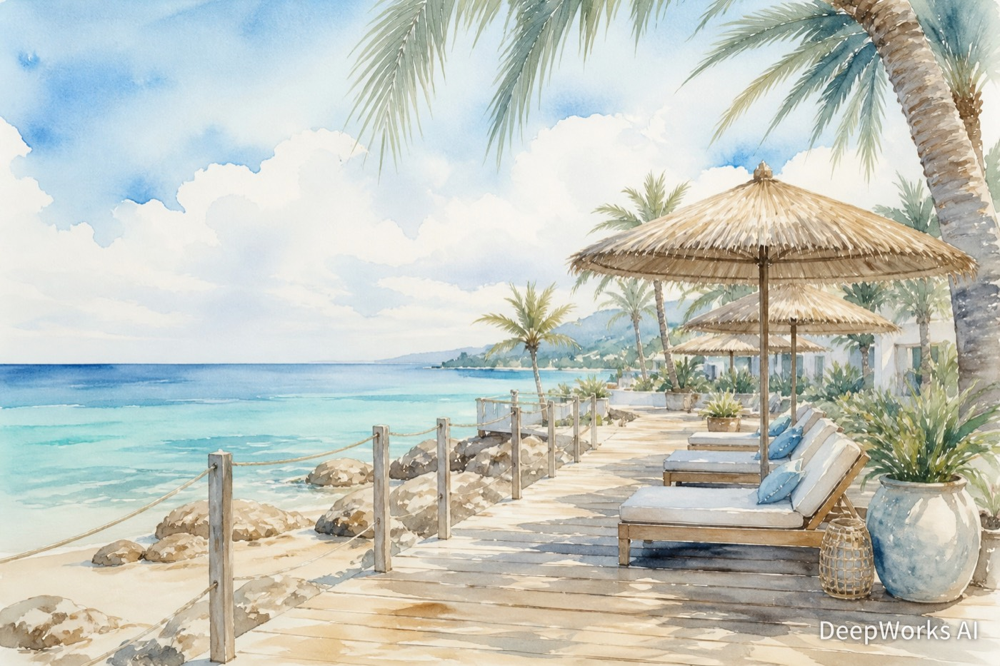
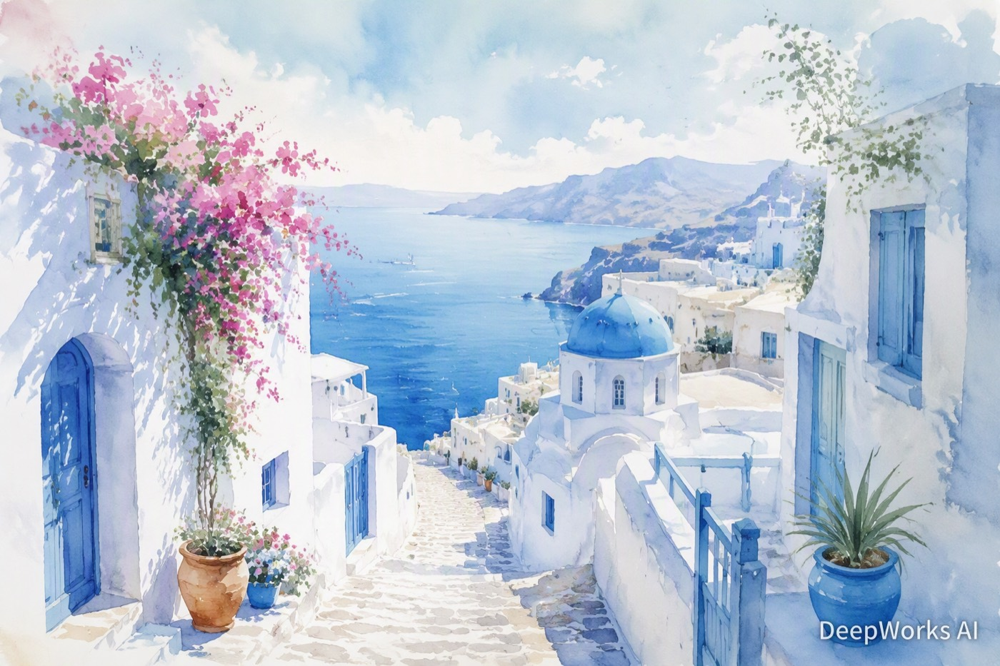
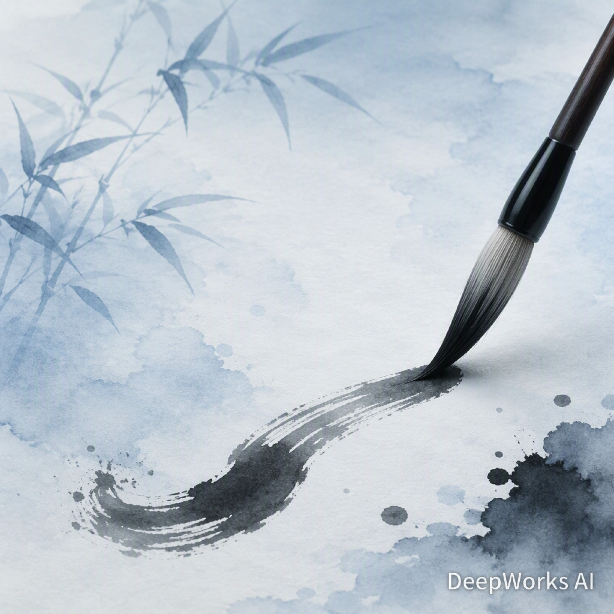
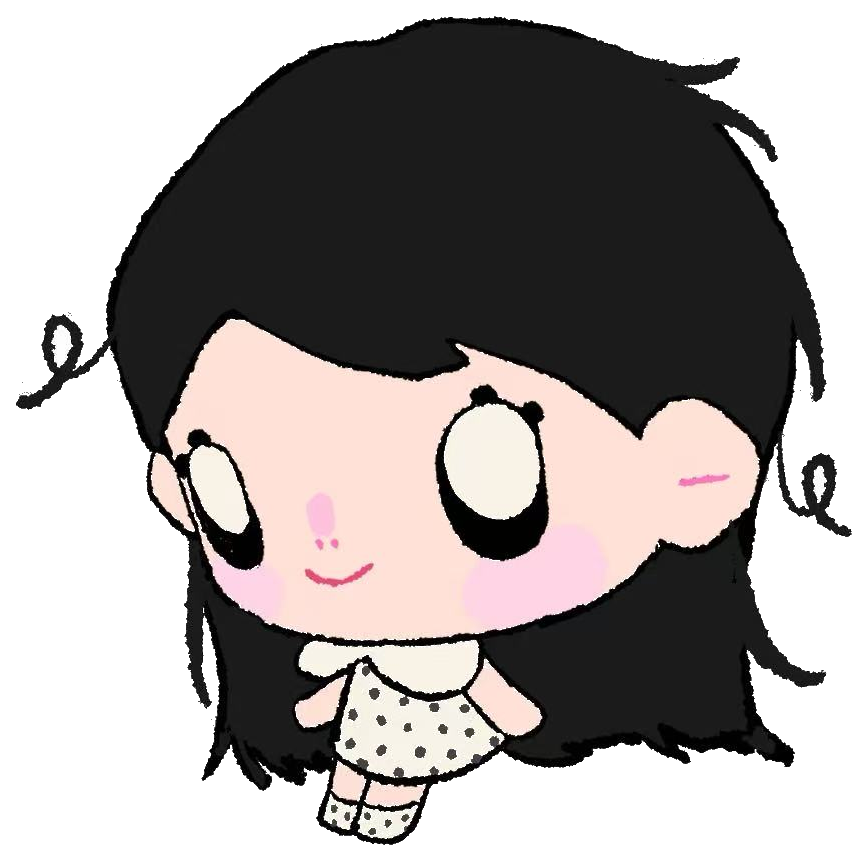

Slow down, breathe deeply,
and appreciate the simple joys
that make life so beautiful.
也许你也喜欢——
欢迎留下你的想法、建议或想对我说的话，我会认真看的。

把日子过成自己喜欢的样子
大一在读 · 在深圳慢慢长大 · 记录生活的人
大一学生
Freshman undergraduate
打磨这个主页 · 上大一必修课 · 用脚步认识深圳
Building this page · Studying · Exploring Shenzhen